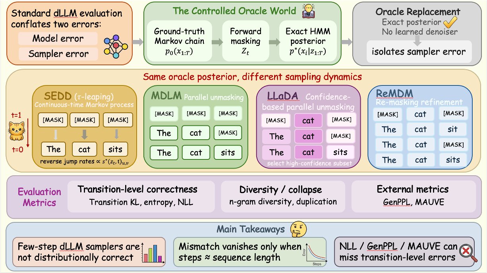

ICML 2026
1University of California, Riverside

Discrete diffusion language models (dLLMs) provide a fast and flexible alternative to autoregressive models (ARMs) via iterative denoising with parallel updates. However, their evaluation is challenging: existing metrics conflate denoiser approximation error with sampler-induced error from the sampling dynamics, a problem that does not arise for ARMs whose autoregressive sampling exactly reflects the learned probability model. We introduce a sampler-centric oracle framework that replaces learned denoisers with an exact Hidden Markov Model posterior derived from a ground-truth Markov chain, isolating sampler-induced error in a controlled setting. We show that few-step discrete diffusion samplers are not distributionally correct even under an oracle denoiser, with transition-level mismatch that vanishes only as the number of steps approaches the sequence length. Moreover, improvements in negative log-likelihood (NLL), generative perplexity (GenPPL), or MAUVE do not imply correct sampling.
We construct data from a known discrete Markov chain so the target transition structure is exactly specified.
Under forward masking corruption, we compute exact posteriors through HMM inference, removing denoiser approximation effects.
We instantiate method-consistent oracle variants for representative samplers and evaluate generated samples against true statistics.
We compare transition-level correctness with aggregate sample-quality metrics to identify hidden sampling bias.
SEDD — Lou et al., 2023. Discrete Diffusion Modeling by Estimating the Ratios of the Data Distribution.
MDLM — Sahoo et al., 2024. Simple and Effective Masked Diffusion Language Models.
ReMDM — Wang et al., 2025. Remasking Discrete Diffusion Models with Inference-Time Scaling.
LLaDA — Nie et al., 2025. Large Language Diffusion Models.
We introduced an oracle-based framework that isolates sampler-induced error in discrete diffusion language models by replacing learned denoisers with exact ground-truth posteriors. In this setting, few-step samplers remain substantially biased: transition-level mismatch persists even under oracle denoising and only diminishes as the number of sampling steps approaches the sequence length.
We further show that common external metrics can obscure this error. GenPPL can improve under local sharpening without faithful sampling, while MAUVE can remain high despite transition-level deviations. LLaDA further shows that samplers using denoiser confidence for token selection can be tightly coupled to the learned denoiser's confidence structure. Overall, our results motivate transition-aware evaluation that separates sampler behavior from denoiser quality and surface-level metrics.
@article{tang2026diffusionsampler,
title={Is Your Diffusion Sampler Actually Correct? A Sampler-Centric Evaluation of Discrete Diffusion Language Models},
author={Tang, Luhan and Yu, Longxuan and Zhang, Shaorong and Ver Steeg, Greg},
journal={arXiv preprint arXiv:2602.19619},
year={2026}
}